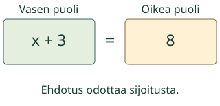
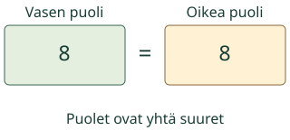
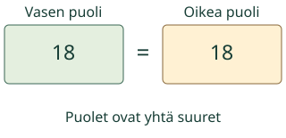

<link rel="stylesheet" href="lesson.css"><section class="eq14" data-b14-equation>
<section data-teaching-step="1" data-lesson-role="teaching-step">
<div class="intro"><p>Aava ehdottaa lukua. Sijoita se x:n paikalle ja vertaa yhtälön puolia.</p></div>
</section>

<section data-teaching-step="2" data-lesson-role="teaching-step">
<section data-explore aria-label="Kokeillaan ehdotusta"><button disabled type="button" data-action="step">Näytä seuraava vaihe</button><div data-model></div><p data-caption>x+3=8. Ehdotus x = 5. Sijoita sama luku jokaiseen x:ään.</p><details data-tools data-lesson-role="teaching-step"><summary>Vaihda mallia tai toista</summary><label>Malli<select disabled data-model-case><option value="yes">x + 3 = 8, kokeile 5</option><option value="no">x + 3 = 8, kokeile 2</option><option value="multiply">3x = 18, kokeile 6</option><option value="transfer">2x + 3 = 11, kokeile 4</option></select></label><button disabled type="button" data-action="play">Toista vaiheet</button> <button disabled type="button" data-action="stop">Pysäytä</button> <button disabled type="button" data-action="model-reset">Mallin alkuun</button><p>Voit tutkia vaiheet vapaasti tai vastata suoraan. Toisto ei käynnisty itsestään.</p></details></section>
</section>
<nav data-lesson-role="metadata"><a href="#eq14-explain">Näin ajattelet</a><a href="#eq14-practice">Kokeile itse</a><a href="#eq14-teacher">Paperille</a></nav>
<section data-teaching-step="3" data-lesson-role="teaching-step">
<details id="eq14-explain" data-lesson-role="worked-example"><summary>Näin ajattelet</summary><h3>Kokeilu ei ole vielä ratkaisu</h3><p>Yhtälössä x + 3 = 8 sijoitetaan x:n paikalle 5. Vasemmalle tulee 5 + 3 = 8 ja oikealle 8. Puolet ovat yhtä suuret: 5 on ratkaisu. Jos kokeilet 2, vasen puoli on 2 + 3 = 5. Oikea on yhä 8, joten 2 ei ole ratkaisu.</p><figure data-lesson-role="worked-example"><figcaption>Ratkaistu esimerkki, ei alkutila.</figcaption></figure><h3>Kertomerkki ei ole numeron liimaamista</h3><p>Yhtälössä 3x = 18 ehdotus 6 antaa 3 · 6 = 18. Se ei anna lukua 36. Ehdotus 5 taas antaa 15, ei 18. Tarkista annettu ehdotus laskemalla, älä vain etsimällä tutulta näyttävää lukua.</p><figure data-lesson-role="worked-example"><figcaption>Ratkaistu esimerkki, ei alkutila.</figcaption></figure><h3>Sama kokeilu uudessa tilanteessa</h3><p>Kahdessa samanlaisessa rasiassa on kummassakin x painoyksikköä. Lisäksi on 3 painoyksikköä, yhteensä 11. Kun x = 4, vasen puoli on 2 · 4 + 3 = 11. Sama x korvaa molemmat rasiat. Kuvan rasia on määrän symboli; ruutu ei punnitse esineitä.</p><figure data-lesson-role="worked-example"><figcaption>Ratkaistu esimerkki, ei alkutila.</figcaption></figure><h3>Vältä tämä ansa</h3><p>Yhtäsuuruusmerkki sanoo, että molemmilla puolilla on sama arvo. Se ei tarkoita vain ”kirjoita seuraavaksi vastaus”. Jos kokeilu epäonnistuu, yhtälö ei ole rikki: juuri tämä luku ei ratkaise sitä.</p><p>Ennusta ennen seuraavaa vaihetta: mitä osille tapahtuu ja mikä pysyy samana?</p></details>
</section>

<section data-teaching-step="4" data-lesson-role="teaching-step">
<section id="eq14-practice"><h2>Kokeile itse</h2><p>Vastaa itse. Malli, selitykset ja vihje ovat valinnaisia.</p><label>Tehtävä<select disabled data-task><option value="yes">1. Yhtälö x + 3 = 8. Ehdotus x = 5. Laske puolet ja päätä,</option><option value="no">2. Yhtälö x + 6 = 14. Ehdotus x = 9. Laske puolet ja päätä</option><option value="multiply">3. Yhtälö 3x = 18. Ehdotus x = 5. 3x tarkoittaa 3 · x.</option><option value="zero">4. Yhtälö 4x + 2 = 2. Ehdotus x = 0. Tyhjä vastaus ei tark</option><option value="find">5. Mikä luku x toteuttaa yhtälön 4x = 24? Kirjoita luku. T</option><option value="transfer">6. Kaksi samanlaista rasiaa ja 3 irtopainoa on 11 painoyks</option></select></label><p data-question>Yhtälö x + 3 = 8. Ehdotus x = 5. Laske puolet ja päätä, onko ehdotus ratkaisu.</p><div data-answer-group="test"><div class="fields"><label>Vasen puoli<input disabled data-answer type="text" inputmode="text" maxlength="128" placeholder="lukuarvo"></label><label>Oikea puoli<input disabled data-answer type="text" inputmode="text" maxlength="128" placeholder="lukuarvo"></label></div><label>Onko ehdotus ratkaisu?<select disabled data-answer><option value="">Valitse</option><option value="yes">Kyllä</option><option value="no">Ei</option></select></label></div><div data-answer-group="solve" hidden><label>x:n arvo<input disabled data-answer type="text" inputmode="text" maxlength="128" placeholder="esim. −3 tai 1/2" autocomplete="off"></label></div><button disabled type="button" data-action="check">Tarkista</button><p data-feedback data-result="neutral" aria-live="polite">Tarkista, kun olet valmis.</p><details data-lesson-role="hint"><summary>Tarvitsen vihjeen</summary><p>Korvaa jokainen x samalla ehdotuksella. Laske ensin kertolasku, sitten yhteen- tai vähennyslasku. Vertaa vasemman ja oikean puolen arvoja.</p></details></section>
</section>

<section data-teaching-step="5" data-lesson-role="teaching-step">
<details data-lesson-role="teaching-step"><summary>Lisää tutkittavaa</summary><p>Voisiko jokainen luku ratkaista yhtälön x + 2 = 2 + x? Kokeile kahta lukua ja perustele sitten laskujärjestyksen avulla. Kaksi kokeilua ei yksin todista kaikkien lukujen tapausta.</p></details>
</section>
<details id="eq14-teacher" data-lesson-role="teacher-note"><summary>Opettajalle, paperille ja lopuksi</summary><p>Kirjoita paperille x + 4 = 10. Kokeile lukuja 5 ja 6. Merkitse taulukkoon ehdotus, vasen puoli ja oikea puoli. Mallin käyttäminen tai esineiden nimeäminen ei ole pakollista.</p><p data-lesson-role="question"><strong>Lopuksi:</strong> Testaa ehdotus x = 3 yhtälössä 2x + 1 = 7. Miksi sama ehdotus ei ratkaise yhtälöä 2x + 1 = 8?</p><p>Luokat 3-6. Tavoite: ehdotetun ratkaisun testaaminen yhtälössä. Kanoniset välttämättömät ja vahvasti tukevat taidot näkyvät navigaatiossa; malli tai paikallinen harjoitus ei lisää kovia esitietovaatimuksia.</p><p>Kaavio näyttää nimettyjä lukuja ja lausekkeita, ei fyysisen vaa’an mittausta. Negatiiviset ja murto-osaiset ratkaisut ovat lukuja. Tarinassa x:n yksikkö ja sallittu ei-negatiivinen tai positiivinen arvo nimetään.</p><p>Syöttö tukee etumerkillisiä kokonais- ja desimaalilukuja sekä murtolukuja, enintään 128 merkkiä. Desimaalissa normalisoinnin jälkeen enintään 18 kokonais- ja 9 desimaalinumeroa. Etu-/loppunollat ja samansuuruiset murtoluvut eivät muuta arvoa. Ei eksponenttimuotoa tai pyöristystä. Yhtälöissä yksi x, ensimmäisen asteen lausekkeet, sulut enintään 12 sisäkkäin ja jako nollasta poikkeavalla vakiolla. Muuttujalla jakoa tai x²-termejä ei tueta. Paperille voi kirjoittaa muitakin perusteltuja tapoja.</p><p>Toiston 650 ms on esitysväli, ei matemaattinen suure tai aikaraja. Kaikki vaiheet voi pysäyttää ja palauttaa. Harjoitus tarkistaa nykyisen vastauksen, ei itsenäisyyttä, muistissa säilymistä tai muodollista hallintaa. Ei henkilökohtaista historiaa, ääni-/puhepakkoa, pakollista mallireittiä tai esineiden nimeämistä.</p></details><noscript data-lesson-role="metadata"><p>Ilman JavaScriptiä alkumalli ja ratkaistut esimerkit näkyvät. Vastaa paperille. Vuorovaikutus ja paikallinen tarkistus tarvitsevat JavaScriptin.</p></noscript></section>
